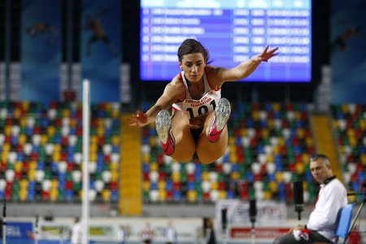
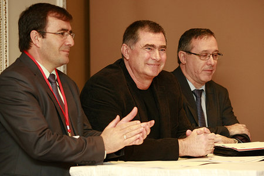

22 February 2014 - Balkan Indoor Championships -
Istanbul
Results:
Men: CLICK HERE
Women: CLICK HERE
Biomechanical Analysis Report: CLICK HERE
Romania and Turkey – the best Balkan teams
Romania and Turkey were the best teams during the Balkan Indoor championships in Istanbul. The Romanian women and the Turkish men won the team trophies. Turkey and Bulgaria were the second and the third team in the women's ranking, while Romania and Serbia followed the best in the men's. Romanian athletes won four gold medals versus three for Turkey.

Ivana Spanovic (SRB) won the gold medal in long jump with a fantastic performance of 6.92m – a National record, personal best for her career, and ¹3 in the world Top list for 2014.
The European Indoor champion Asmir Kolasinac (SRB) won the gold in Shot put with 20.23. Andrei Gag (ROU) was second with personal best of 20.17m. The world championships finalist Georgi Ivanov (BUL) achieved 20.12m for the bronze.
Anca Heltne (ROU) won the women's Shot put with 18.02m. Emine Hatun Tuna (TUR) finished first at 3000 m with 9:16.74 before the European and World Junior champion Amlea Terzic (SRB), 9:19.29.
The European junior champion from Rieti 2013 at 5,000m and 10,000m Ali Kaya (TUR) won the men's 3000m in 8:52.15.
Ana Simic (CRO) was the best in women's High jump with 1.94 m. Bulgarian veteran Venelina Veneva-Mateeva jumped 1.90 m for the second place.
More than 200 athletes started in Istanbul. The competitors from Georgia, Slovenia and Cyprus made their debut on the Balkan stage. The three countries took home their first Balkan medals: Slovenia took 7 medals (1 gold, 2 silver, 4 bronze), two silver medals for Georgia and a gold and a bronze for Cyprus.
Slovenia, Georgia and Cyprus joined Balkan Athlerics in October 2013 and today they will make their Balkan competition debut. The athletes from the three countries will compete at Balkan Indoor championships in Istanbul.

More than 220 athletes from all 15 member countries will start today in the athletics arena "Asli Chakir Alpetin".
The Vice President of European Athletics Jean Gracia and the president of ABAF Dobromir Karamarinov are among the distinguished guests in Istanbul.
"I am extremely happy to be part of the very first competiton for ABAF for this year. Your development is increasing very fast", said Gracia.
"The Balkan championships is an historical event. All of our 15 members have their participants in Istanbul. The Balkan Games have started almost 100 years ago, it's a historical fact. The results from today will remain in the history as well. I wish good luck to all the athletes today, may them stay healthy and strong throughout the year", said Karamarinov.
Text by Yana Kasova